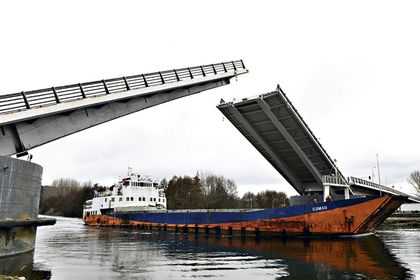

Daniel Gaspar Figueiredo
Una ciudad está separada en dos zonas por un río. Para circular entre ambas zonas solo se puede acceder en automóvil a través de un puente levadizo que las conecta. A su vez, por el río circulan barcos de carga y descarga de mercancías. Nuestro sistema será el encargado de controlar el estado del puente levadizo y de dar orden de paso a los vehículos o a los barcos.
Cabe destacar que mientras el puente esté levantado solo podrán pasar los barcos, en caso contrario, solo podrán pasar los coches. Para este sistema se van a proponer unos máximos de coches y/o barcos circulando a la vez.
En el Esquema del sistema se pueden ver los agentes y las comunicaciones que se proponen.
El objetivo de verificación es asegurar que no haya conflictos de concurrencia en el pasaje de los vehículos. Debemos poder asegurar que tanto coches como barcos pasan cuando deben de pasar para evitar accidentes o incluso pérdidas humanas.
Se han tomado las siguientes decisiones en cuanto al modelado del sistema
El modelo tendrá 3 agentes (barco, coche, puente) y un único canal de comunicación global.
Estos 3 agentes actuarán en función de los estados que tenga cada instancia.
Se ha limitado a 3 vehículos porque queremos probar que es posible tener concurrencia en el puente (tener mas de 1 vehiculo a la vez) y a su vez, queremos probar que si el puente esta lleno, el último vehículo se espera para cruzar.
En cuanto a la implementación, los agentes los implementaremos usando un array de proctypes:
active [3] proctype car() {
...
}
active [3] proctype ship() {
...
}
active proctype brdige(){
...
}
Cada uno de estos agentes tendrá unas variables internas para poder gestionar el estado de cada una de las instancias. Las variables que se van a usar son las siguientes:
//Para todos
pid my_id = _pid;
int crossing_time = 0;
int waiting_time = 0;
mtype s_response;
bool asked = 0;
//Para los coches
mtype car_state = waiting;
//para los barcos
mtype ship_state = waiting;
Las variables ` *_state` podrán tomar únicamente 2 valores: {waiting, crossing}. Cuando "aparece" un vehículo, este se pone directamente en espera, pues no puede actuar sin que el agente `puente` le ordene. El resto de variables servirán para simular el tiempo cruzando el puente, para saber si esta instancia ya ha enviado una petición para cruzar el puente para evitar enviar múltiples peticiones. Además también se usa una variable para guardar la respuesta a una petición. Esta variable (`s_response`) puede tomar los valores {ship_wait, ship_cross, car_wait, car_cross}.
Las acciones que realizan los agentes (coches y barcos) serán las de pedir el paso, recibir una respuesta o cruzar el puente. Para ello se implementará de la siguiente forma:
:: atomic { (asked == 0 && car_state != crossing && cur_seq_car < max_seq_car) -> ask_cross[my_id] = 1; action!car_ask,1, my_id; asked = 1 }
:: atomic {
(car_state == crossing) ->
if
...
fi
}
:: atomic{ (asked == 1) ->
response?s_response, 1, eval(my_id);
if
...
fi
}
El ejemplo es del agente coche.
El canal de comunicación tendrá 3 variables asociadas, estas serán: la acción a realizar, el ID del TIPO de vehiculo y el ID del vehículo.
Para los coches usaremos el "id de tipo vehiculo = 1" y para los barcos usaremos el "id de tipo vehiculo = 2". Es importante que se envíe el ID del vehículo para que el puente sepa quién envía la petición y a quién debe responder.
El puente tratará las peticiones una tras otra de forma atómica. No "leerá" una segunda petición hasta que no termine todo el tratamiento de la primera. Las casuísticas detectadas han sido las siguientes:
Las casuísticas anteriores, marcadas en azul sirven para implementar justicia y no permitir que crucen barcos sin parar, dejando a los coches parados y esperando infinitamente.
El modelo formal PROMELA es el siguiente:
mtype = {car_ask, ship_ask, car_wait, ship_wait, car_cross, ship_cross, crossing, waiting, raise_bridge, lower_bridge, raising, lowering, raised, lowered, car_end, ship_end};
mtype bridge_state = lowered;
mtype order;
int car_count = 0;
int ship_count = 0;
int max_car = 2;
int max_ship = 2;
int type_id;
pid vehicle_id;
int max_crossing_time = 2;
int max_waiting_time = 2;
int max_rt = 1;
int max_lt = 1;
bool moving_bridge = 0;
int max_seq_car = 3;
int max_seq_ship = 1;
int cur_seq_car = 0;
int cur_seq_ship = 0;
byte ask_cross[6];
int semaphore_time; // por ahora no he visto como implementar esta funcionalidad.
chan action = [0] of {mtype, int, pid}; // El int se usa para pasar el orden de los coches (el uid del coche) para asegurar que haya un orden (y barcos)
chan response = [0] of {mtype, int, pid };
active [3] proctype car() {
pid my_id = _pid;
mtype car_state = waiting;
int crossing_time = 0;
int waiting_time = 0;
mtype s_response;
bool asked = 0;
do
:: atomic { (asked == 0 && car_state != crossing && cur_seq_car < max_seq_car) -> ask_cross[my_id] = 1; action!car_ask,1, my_id; asked = 1 }
:: atomic {
(car_state == crossing) ->
if
:: (crossing_time < max_crossing_time) -> crossing_time ++
:: (crossing_time >= max_crossing_time ) -> ask_cross[my_id] = 0; car_state = waiting; crossing_time = 0; asked = 0; action!car_end,2, my_id
fi
}
:: atomic{ (asked == 1) ->
response?s_response, 1, eval(my_id);
if
:: (s_response == car_wait) -> car_state = waiting; asked = 0
:: (s_response == car_cross) -> ask_cross[my_id] = 2; car_state = crossing; asked = 0
fi
}
od
}
active [3] proctype ship() {
pid my_id = _pid;
mtype ship_state = waiting;
int crossing_time = 0;
int waiting_time = 0;
mtype s_response;
bool asked = 0;
do
:: atomic { (asked == 0 && ship_state != crossing && cur_seq_ship < max_seq_ship) -> ask_cross[my_id] = 1; action!ship_ask,2, my_id; asked = 1 }
:: atomic {
(ship_state == crossing) ->
if
:: (crossing_time < max_crossing_time) -> crossing_time ++
:: (crossing_time >= max_crossing_time ) -> ask_cross[my_id] = 0 ; ship_state = waiting; crossing_time = 0; asked = 0; action!ship_end,2, my_id
fi
}
:: atomic{ (asked == 1) ->
response?s_response, 2, eval(my_id);
if
:: (s_response == ship_wait) -> ship_state = waiting; asked = 0
:: (s_response == ship_cross) -> ask_cross[my_id] = 2; ship_state = crossing; asked = 0
fi
}
od
}
active proctype brdige(){
int raising_time = 0;
int lowering_time = 0;
start : do
:: atomic { (moving_bridge == 0) -> action?order, type_id, vehicle_id;
if
:: (order == car_ask && bridge_state == lowered && car_count < max_car) -> cur_seq_ship = 0; cur_seq_car++; car_count++; response!car_cross,type_id, vehicle_id
:: (order == ship_ask && bridge_state == raised && ship_count < max_ship) -> cur_seq_car = 0; cur_seq_ship++; ship_count++; response!ship_cross,type_id, vehicle_id
:: (order == car_ask && cur_seq_car >= max_seq_car) -> response!car_wait,type_id, vehicle_id
:: (order == ship_ask && cur_seq_ship >= max_seq_ship) -> response!ship_wait,type_id, vehicle_id
:: (order == car_ask && bridge_state == raised && ship_count > 0) -> response!car_wait,type_id, vehicle_id
:: (order == ship_ask && bridge_state == lowered && car_count > 0) -> response!ship_wait,type_id, vehicle_id
:: (order == car_ask && bridge_state == lowered && car_count >= max_car) -> response!car_wait,type_id, vehicle_id
:: (order == ship_ask && bridge_state == raised && ship_count >= max_ship) -> response!ship_wait,type_id, vehicle_id
:: (order == car_end) -> car_count--
:: (order == ship_end) -> ship_count--
:: (order == car_ask && bridge_state == raised && ship_count == 0) ->bridge_state = lowering; moving_bridge = 1
:: (order == ship_ask && bridge_state == lowered && car_count == 0) ->bridge_state = raising; moving_bridge = 1
fi
}
:: atomic { (moving_bridge == 1) ->
if
:: (bridge_state == raising && raising_time < max_rt ) -> raising_time ++
:: (bridge_state == lowering && lowering_time < max_lt) -> lowering_time ++
:: (bridge_state == raising && raising_time >= max_rt) -> cur_seq_car = 0; cur_seq_ship++; raising_time = 0; bridge_state = raised; ship_count ++; moving_bridge = 0; response!ship_cross,type_id, vehicle_id
:: (bridge_state == lowering && lowering_time >= max_lt) -> cur_seq_ship = 0; cur_seq_car++; lowering_time = 0; bridge_state = lowered; car_count ++; moving_bridge = 0; response!car_cross,type_id, vehicle_id
fi
}
od
}
Se ha remodelado porque:
(order == car_ask && bridge_state == lowered && car_count >= max_car) y su análogo para el barco.Es decir, se ha eliminado el estado waiting.
Para poder hacer esta simulación, se ha ampliado el espacio de búsqueda y la memoria.
Tras comprobar que todos estos cambios, aparentemente, funcionan, se han ampliado el numero de agentes, Ahora disponemos de 3 coches en total, y 3 barcos. Simultáneamente en el puente pueden haber 2 como máximo del mismo tipo.
Los objetivos de verificación son los siguientes:
Lo que ha dado lugar a las siguientes propiedades LTL verificadas o refutadas:
ltl max_cars { [] (car_count <= max_car)}
ltl max_ships { [] (ship_count <= max_ship)}
ltl crossing_cars { [] ( (bridge_state == lowered) -> (ship_count == 0) )}
ltl crossing_ships { [] ( (bridge_state == raised) -> (car_count == 0) )}
ltl no_moving_bridge {[] ( (moving_bridge == 1) -> (car_count == 0 && ship_count == 0) ) }
ltl bridge_states_raise { [] ( ( (moving_bridge == 1) && (bridge_state == raising) ) -> <> ( ( moving_bridge == 0) && (bridge_state == raised))) }
ltl bridge_states_lower {[] ( ( (moving_bridge == 1) && (bridge_state == lowering) ) -> <> ( ( moving_bridge == 0) && (bridge_state == lowered))) }
// ltl v_asks {[] ( ((ask_cross[0]==1) -> <> (ask_cross[0] == 2 ) ) || ((ask_cross[1]==1) -> <> (ask_cross[1] == 2 )) || ((ask_cross[2]==1) -> <> (ask_cross[2] == 2 )) || ((ask_cross[3]==1) -> <> (ask_cross[3] == 2 )) || ((ask_cross[4]==1) -> <> (ask_cross[4] == 2 )) || ((ask_cross[5]==1) -> <> (ask_cross[5] == 2 )) )}
//Nueva versión
ltl v_asks {[] ( ((ask_cross[0]==1) -> <> (ask_cross[0] == 2 ) ) && ((ask_cross[1]==1) -> <> (ask_cross[1] == 2 )) && ((ask_cross[2]==1) -> <> (ask_cross[2] == 2 )) && ((ask_cross[3]==1) -> <> (ask_cross[3] == 2 )) && ((ask_cross[4]==1) -> <> (ask_cross[4] == 2 )) && ((ask_cross[5]==1) -> <> (ask_cross[5] == 2 )) )}
La última propiedad no se ha podido verificar porque aunque se haya implementado justicia, está a nivel de tipo de vehículo y no a nivel de vehículo individual. Por lo que no se puede asegurar que un vehículo determinado pase. Para solucionar esto debemos combinar esta justicia con una gestión de colas o un semáforo.
Para asegurar que no habrá starvation (inanición) se ha ampliado el modelo para que implemente justicia. Se han usado las variables enteras `max_seq_car`, `max_seq_ship`, `cur_seq_car`, `cur_seq_ship`.
`max_seq_*` sirve para establecer el numero máximo de vehículos del mismo tipo que pasan seguidos. Se ha limitado a 3 porque los cambios de este valor u otro más alto no son significativos y debemos tener el modelo lo más simple posible. No se usan limites de 0-2 porque queremos que puedan haber al menos 2 vehículos del mismo tipo a la vez en el barco y que un tercero se quede en espera.
Cambio: Para relajar la justicia, solo pedimos 1 barco y 3 coches.
Además, para poder controlar qué vehículos han pedido para cruzar o han cruzado cruzado se ha creado un vector de bytes de tamaño 6 (1 por vehículo) . Cada elemento de este vector podrá tener 3 valores:
byte ask_cross[6];
De esta forma, la LTL para asegurarse que si un vehículo pide para pasar (Valor "1"), entonces en algún momento cruzará (Valor "2") consiste en comprobar este vector.
Las verificaciones han dado lugar a cambios en el modelo:
//para los coches (similar en barcos)...
:: atomic { (asked == 0 && car_state != crossing && cur_seq_car < max_seq_car) -> ask_cross[my_id] = 1; action!car_ask,1, my_id; asked = 1 }
:: (crossing_time >= max_crossing_time ) -> ask_cross[my_id] = 0; car_state = waiting; crossing_time = 0; asked = 0; action!car_end,2, my_id
:: (s_response == car_cross) -> ask_cross[my_id] = 2; car_state = crossing; asked = 0
//Para el puente
:: (order == car_ask && bridge_state == lowered && car_count < max_car) -> cur_seq_ship = 0; cur_seq_car++; car_count++; response!car_cross,type_id, vehicle_id
:: (order == ship_ask && bridge_state == raised && ship_count < max_ship) -> cur_seq_car = 0; cur_seq_ship++; ship_count++; response!ship_cross,type_id, vehicle_id
:: (order == car_ask && cur_seq_car >= max_seq_car) -> response!car_wait,type_id, vehicle_id
:: (order == ship_ask && cur_seq_ship >= max_seq_ship) -> response!ship_wait,type_id, vehicle_id
:: (bridge_state == raising && raising_time >= max_rt) -> cur_seq_car = 0; cur_seq_ship++; raising_time = 0; bridge_state = raised; ship_count ++; moving_bridge = 0; response!ship_cross,type_id, vehicle_id
:: (bridge_state == lowering && lowering_time >= max_lt) -> cur_seq_ship = 0; cur_seq_car++; lowering_time = 0; bridge_state = lowered; car_count ++; moving_bridge = 0; response!car_cross,type_id, vehicle_id
Dificultades
Lo más costoso ha sido la búsqueda de errores detectados en fase de verificación. Es decir, en un momento dado, se creía que el sistema tenía un comportamiento que, tras usar una LTL para verificarlo, no se cumplía. Se ha tenido que rehacer el modelo porque tras analizar algunas trazas se veía que habían estados que no aportaban nada al sistema. Eliminar estos estados forma parte de otra de las tareas más costosas en este proyecto: reducir el espacio de búsqueda de los estados. Debemos tener en cuenta que estamos limitados por un tamaño de estados máximo y por una memoria física disponible, por lo que debemos abstraer al máximo nuestro modelo.
Otro de los problemas han sido la simulación del tiempo. Para hacer el sistema medianamente realista, se ha añadido un "tiempo de cruzado", esto es, el tiempo que tarda un coche o un barco en cruzar el puente. Se ha detectado en algunas trazas que un coche podía empezar a cruzar el puente y luego no actualizaba el tiempo porque el sistema no le daba paso en la ejecución.
Propuestas de mejora
Como mejora para este proyecto se ha detectado que la propuesta para implementar justicia no es suficientemente realista o buena. Es decir, lo que se ha implementado es: "solo pueden pasar 3 vehiculos del mismo tipo consecutivamente, tras estos 3 deben pasar de forma obligatoria 3 vehículos del tipo contrario". Lo cual, no es para nada realista. Lo mejor sería, por ejemplo, implementar un semáforo. De manera que pasen 3 vehículos del mismo tipo y después se active el semáforo para los del tipo contrario. Si pasado "X" tiempo no ha cruzado ninguno, vuelven a pasar los del tipo inicial.
En un caso práctico; imaginando que hay 9 coches y 1 barco y primero (por el motivo que sea) cruza un coche, El sistema actual se quedaría bloqueado en "Han pasado 3 coches y 1 barco, el resto de coches están esperando (a que pasen 2 barcos más)".
En la verificación, actualmente tenemos la ltl "v_asks" que verifica que "si cualquier vehículo pide para pasar, en algún momento pasará". Realmente lo que se quería verificar es que "si algún vehículo pide para pasar, en algún momento pasará". No se ha conseguido verificar esta última propiedad. Probablemente, con a la propuesta de mejora mencionada anteriormente (semáforo) se podría verificar.
En cuanto a la dificultad de la simulación de tiempo, propondría hacer un contador global de acciones y basarse en este contador para priorizar a los agentes que lleven más tiempo sin realizar acciones.
Aunque una verificación no se cumpla, no tiene porque estar mal. Es decir, justificar que una propiedad no es cumple puede enriquecer la compresión del modelo. Por ejemplo, no podemos asegurar que todos los vehículos puedan pasar porque el modelo no lo permite. Esto lo hemos averiguado gracias a que no se cumple una de las propiedades de verificación.
Punto de vista personal
Creo que con SPIN y PROMELA podemos realizar modelos de cualquier tipo de sistema para verificar propiedades concurrentes. Sin embargo, la complejidad de implementación y de abstracción deben estar muy bien cuidadas. Hay que tener en cuenta la escalabilidad del modelo, por ejemplo, en el caso del puente se han usado únicamente 3 coches y 3 barcos porque es la cantidad mínima y hay que tener en cuenta que el sistema debe funcionar igual con 6 vehículos que con miles de ellos (en la verificación sería imposible computacionalmente con un sistema con miles de agentes, por eso abstraemos).